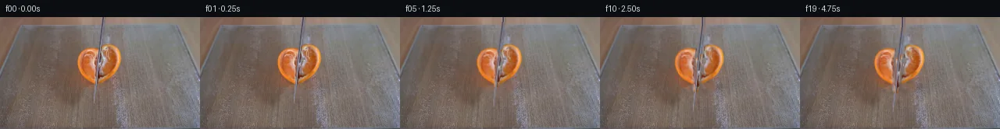

![首帧]()

Round 00
2026-11-04T22:10:47.650068+00:00像素候选变化代码 +215/−0inspection 更新
pixels 63f146e775c61d0a · code 011c61c45f094ac4
查看本轮 generate.py 真实 diff
--- previous/generate.py +++ current/generate.py @@ -0,0 +1,215 @@ +from pathlib import Path + +import cv2 +import numpy as np +from PIL import Image, ImageDraw, ImageFont + +import artifact_io + + +ROOT = Path(__file__).resolve().parent +W, H = 256, 144 + + +def smoothstep(x): + x = np.clip(x, 0.0, 1.0) + return x * x * (3.0 - 2.0 * x) + + +def largest_filled_component(binary, side): + """Return the filled orange silhouette on one side of the blade.""" + work = np.zeros_like(binary) + if side == "left": + work[32:101, 92:127] = binary[32:101, 92:127] + else: + work[32:101, 128:164] = binary[32:101, 128:164] + work = cv2.morphologyEx(work, cv2.MORPH_CLOSE, np.ones((5, 5), np.uint8)) + contours, _ = cv2.findContours(work, cv2.RETR_EXTERNAL, cv2.CHAIN_APPROX_SIMPLE) + out = np.zeros_like(binary) + if contours: + contour = max(contours, key=cv2.contourArea) + cv2.drawContours(out, [contour], -1, 255, cv2.FILLED) + # The color threshold follows rind/flesh. A slight expansion keeps the + # original anti-aliased boundary and its contact shadow attached. + out = cv2.dilate(out, np.ones((3, 3), np.uint8), iterations=1) + return out + + +def affine_layer(rgb, alpha, center, dx, dy, angle): + matrix = cv2.getRotationMatrix2D(center, angle, 1.0) + matrix[:, 2] += (dx, dy) + warped_rgb = cv2.warpAffine( + rgb, matrix, (W, H), flags=cv2.INTER_LINEAR, + borderMode=cv2.BORDER_CONSTANT, borderValue=(0, 0, 0) + ) + warped_alpha = cv2.warpAffine( + alpha, matrix, (W, H), flags=cv2.INTER_LINEAR, + borderMode=cv2.BORDER_CONSTANT, borderValue=0 + ) + return warped_rgb, warped_alpha + + +def composite(base, layer, alpha): + a = alpha.astype(np.float32)[..., None] / 255.0 + return np.clip(base.astype(np.float32) * (1.0 - a) + layer.astype(np.float32) * a, + 0, 255).astype(np.uint8) + + +def make_masks(src): + hsv = cv2.cvtColor(src, cv2.COLOR_RGB2HSV) + # Orange pixels provide reliable seeds; filled contours retain pale pith + # and translucent highlights that are less saturated. + orange = cv2.inRange(hsv, (2, 80, 105), (28, 255, 255)) + left = largest_filled_component(orange, "left") + right = largest_filled_component(orange, "right") + + # Blade polygon measured from the source. It narrows toward the tip and is + # intentionally kept separate from the two fruit silhouettes. + knife = np.zeros((H, W), np.uint8) + polygon = np.array([ + [129, 0], [136, 0], [132, 31], [130, 47], [128, 68], + [125, 91], [123, 107], [121, 112], [118, 112], [120, 91], + [122, 68], [124, 46], [126, 30] + ], np.int32) + cv2.fillPoly(knife, [polygon], 255) + return left, right, knife + + +def clean_plate(src, left, right, knife): + # Only narrow revealed slivers are visible in the animation. Inpainting + # synthesizes matching board grain beneath the source objects. + removal = cv2.bitwise_or(cv2.bitwise_or(left, right), knife) + removal = cv2.dilate(removal, np.ones((5, 5), np.uint8), iterations=1) + bgr = cv2.cvtColor(src, cv2.COLOR_RGB2BGR) + plate = cv2.inpaint(bgr, removal, 5, cv2.INPAINT_TELEA) + return cv2.cvtColor(plate, cv2.COLOR_BGR2RGB) + + … diff truncated; 128 more lines …